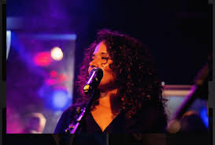

Grottes · Servette · Pâquis · Saint-Jean
Une école de chant à taille humaine au cœur du quartier des Grottes, à quelques minutes à pied de la gare Cornavin. Cours privés et collectifs, coaching vocal fondé sur la vocologie — pour débutant·es comme pour chanteurs et chanteuses confirmés.

Votre professeure de chant
Imane El Baladi est professeure de chant, directrice artistique d'Expressive Singing et titulaire d'un Master en Vocologie Artistique. Ses cours de chant associent une technique vocale solide — souffle, registres, résonance, santé vocale — à une approche expressive et incarnée.
Que vous habitiez les Grottes, la Servette, les Pâquis ou Saint-Jean, ou que vous veniez d'un autre quartier de Genève, vous trouverez ici un lieu pour explorer votre voix en confiance, en français ou en anglais.
Nos cours
Coaching vocal individuel, adapté à votre voix et à vos objectifs.
Chanter, bouger et créer ensemble — voix, corps et théâtre.
Ateliers de chant pour enfants, directement dans les écoles.
Chant, théâtre et mouvement réunis sur scène, en milieu scolaire.
Également : des masterclasses pour artistes et professionnels de la voix, et des ateliers d'une journée. Voir tous les cours →
Accès
Au Shanti Club, dans le quartier des Grottes, à quelques minutes à pied de la gare Cornavin et facilement accessible depuis la Servette, les Pâquis et Saint-Jean. Cours sur rendez-vous.
Avis
Nos élèves partagent leur expérience sur Google et sur Superprof, où Imane El Baladi donne aussi ses cours de chant à Genève.
Les avis laissés sur la fiche Google d’Expressive Singing, Rue des Grottes 28 à Genève.
Lire les avis GoogleSuperprof
Les avis des élèves d’Imane El Baladi, professeure de chant à Genève, sur Superprof.
Lire les avis SuperprofQuestions fréquentes
Les cours privés et collectifs ont lieu au Shanti Club, Rue des Grottes 28, 1201 Genève, dans le quartier des Grottes, à quelques minutes à pied de la gare Cornavin. Le lieu est facilement accessible depuis la Servette, les Pâquis et Saint-Jean. Les ateliers pour enfants et de comédie musicale ont lieu directement dans les écoles.
Non. Nos cours de chant accueillent tous les niveaux, des grands débutants aux chanteurs et chanteuses confirmés. Chaque cours part de votre voix telle qu'elle est aujourd'hui.
Un cours privé de 60 minutes coûte CHF 70. Les cours collectifs coûtent CHF 190 pour un bloc de 4 lundis. Pour les masterclasses pour artistes et les projets dans les écoles, le prix est établi sur demande.
Imane El Baladi, professeure de chant et directrice artistique d'Expressive Singing, titulaire d'un Master en Vocologie Artistique. Elle associe la science de la voix à une approche expressive du chant.
Oui, sous forme d'ateliers de chant et de comédie musicale proposés directement dans les écoles. Écoles, enseignant·es et associations de parents peuvent nous contacter pour construire un projet ensemble.
Les cours privés se font sur rendez-vous et les masterclasses sont organisées sur demande. Les cours collectifs ont lieu le lundi à 20h30.
Vous pouvez réserver et payer un cours privé en ligne sur la page Cours, ou nous écrire sur WhatsApp ou nous appeler au +41 76 266 44 15.
En français ou en anglais, selon votre préférence.
Prêt·e à chanter ?
Choisissez un créneau en ligne, ou écrivez-nous sur WhatsApp : nous vous répondons rapidement.